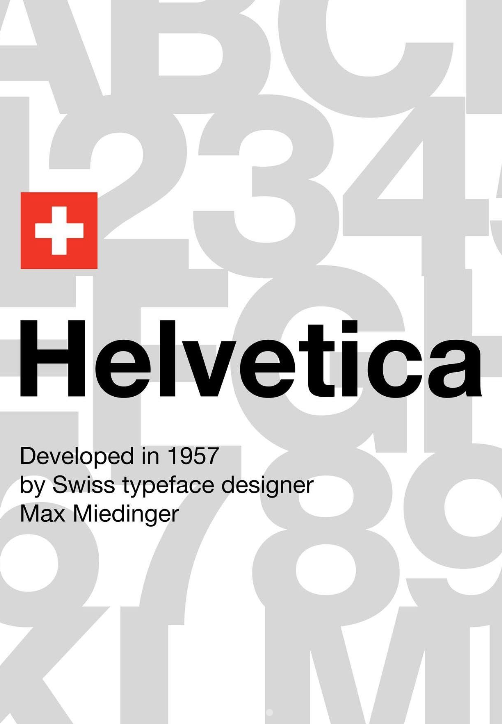

Birth of Helvetica
Swiss designer Max Miedinger, together with Eduard Hoffmann, developed a new sans-serif typeface called "Neue Haas Grotesk." It was designed to be highly legible, balanced, and neutral.
THE STORY
Created to achieve clarity instead of personality, Helvetica eventually became the visual language of modern communication. Its influence extends from transportation systems and corporate branding to websites, operating systems, books, and public spaces.
TIMELINE
Swiss designer Max Miedinger, together with Eduard Hoffmann, developed a new sans-serif typeface called "Neue Haas Grotesk." It was designed to be highly legible, balanced, and neutral.
To make the font more appealing to the international market, it was renamed "Helvetica," derived from "Helvetia," the Latin word for Switzerland.
Designers embraced Helvetica for its clean, objective appearance. It became closely associated with the International Typographic Style, commonly known as Swiss Design.
Helvetica remains one of the world's most recognizable typefaces and continues to influence branding, digital interfaces, editorial design, and visual communication.
PHILOSOPHY
Every character is carefully proportioned, making information easier to read without distracting the audience.
Helvetica avoids unnecessary decoration, allowing ideas and messages to remain the primary focus rather than the typeface itself.
Whether used in logos, books, signage, websites, or mobile applications, Helvetica adapts effortlessly across different forms of media.

LEGACY
Helvetica became a symbol of modernism because it embraced simplicity, precision, and structure. Its enduring popularity demonstrates that effective design often relies on restraint rather than excessive decoration.
"Good typography is invisible. It allows ideas to be seen."
— Inspired by Swiss Design Principles